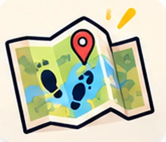

Kies je spel
Drie manieren om te spelen
Elke speurtocht kan op alle drie. Je kiest bij de start.
- 🚶BuitenMet gps langs plekken in je eigen buurt.
- 👣BinnenLopen op de plaats: de telefoon telt je stappen.
- 🛋️Op de bankZonder lopen: tik op de kaart en speel de puzzels.
Voor school en BSO
MiniMystery Educatie
Speurtochten met echte lesstof, per vak. Eén Schoolpas voor de hele school.
Bekijk Educatie →Zo werkt het

1. Open het spelGeen app, geen account. Eén telefoon per groepje.- 2. Los het mysterie opPuzzels, foto's en opdrachten. De telefoon leest voor.
 3. DiplomaOpgelost? Print het diploma met jullie foto's.
3. DiplomaOpgelost? Print het diploma met jullie foto's.
Tips voor de volwassene
- Speel eerst samen de gratis proefronde: dan weet iedereen hoe het werkt.
- Meer telefoons? Vul op elke telefoon dezelfde Feestpas-code in en daarna de zaakcode van de eerste telefoon.
- Buiten blijf je op de stoep; een volwassene loopt altijd mee.
De Feestpas
Jullie eigen versie
📸 Personaliseren · € 29,95Foto's en namen van de kinderen in het spel, plus een thema. Inclusief Feestpas.
✨ Iets helemaal nieuwsEigen route, eigen verhaal of een speurtocht voor een hele school. Prijs op aanvraag.
Vraag minimaal twee weken van tevoren aan. Meer over op maat →